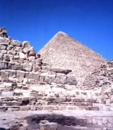
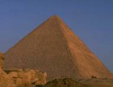

|
金字塔
最近，三峡库区湖北省姊归县考古队在姊归县西南部的磨坪乡发现一悬棺群。该悬棺群位于磨坪乡杨林公元820年，开罗回教总督卡利夫.阿尔玛门（Caliph Al-Ma＇mun）找到了现代考古学家所称的“玛门穴”(Ma＇mun＇s Hole)。这条信道深入金字塔内部，并连接数条信道。而金字塔真正的入口，就在玛门穴上方，离地表约55英�盏牡胤健�

从入口进入金字塔，一开始便是一条呈26度角倾斜的下坡道，直行而下，会遇到另一条上坡道；直下更是一条通达金字塔底部，约350英�粘さ南缕碌馈Ｔ谛诺谰⊥罚�是一间位于金字塔正下方600英�盏氖�室。上坡道则是一条向上呈26度的信道，信道内很难让人直立起身体。
到达上坡道顶端后，迎面而来的正是有名的"大甬道"(The Grand Gallery).同样保持26度角向上爬升。大甬道的下方有另外一条水平的信道，通向南方,高度为3英��9英�迹�长127英�眨�直通往所谓的"皇后殿"，在南北两侧，各有一条9英�伎恚�8英�几叩耐ㄆ�孔。值得注意的是，这两条通气孔并没有连结到金字塔外。没有人晓得原因。而皇后殿内则自金字塔发掘以来便空无一物，到底这个石室的建造目的是什么，还是谜团。
大甬道更是一大迷团。它的地板宽度有6英��9英�迹�墙壁高度有7英��6英�迹�随之而上的是七层石块，每层向内伸出3英�迹�直到顶部密合，高度则达到28英�铡４箴�道全长达153英�眨�内壁是用巨形磨光石灰岩板紧密接合而成。大甬道以26度的斜度向上延伸，又必须承受住在其上方百万吨的重量，这种惊人的建筑技巧及目的，实在是令人不解。
大甬道的尽头连接的是传说中法老王尸体放置的“王殿”。入口只有3英��6英�几撸�任何人进入都要弯着身体。进去不到4英�眨�便有一间"前堂"（An-techamber），高达12英�铡３ぴ�10英�铡：嵯蛴兴奶踝菹蚯�道。其中三条一路凹到地面，第四条（最北的一条）只挖到入口屋顶的高度（3英��6英�迹�，凹槽内还嵌有一块6英�崭�9英�己竦木扌涡�武岩石板，挡在入口前，仅留下21英�嫉目占洹＞葑�家解释，这里是放置防止盗墓者侵入的巨大石板的，石板在凹槽中由上向下降下，好象活门一样，只是现在这些石板都不见踪影。它们哪里去了呢?墓室在发现的时候并没有如期的发现法老王的遗体，当然连陪藏品都没有。室内空无一物，只有一个石棺嵌入西面墙壁的地板上。石棺的长度只有6英�眨�深度也不够放下法老王的尸体。地板也很奇特，东西的高度相差达一英�铡Ｇ奖诤偷匕宓氖�材都未经过磨光，显得粗糙。不如大金字塔的华丽。
卡夫拉王金字塔内部信道不如大金字塔的复杂，几乎整座金字塔满满的都是石块，古埃及人为何要设计这么巨大又单调的建筑物呢?为何没有像大金字塔一样设计复杂的信道，以防止盗墓者的入侵呢？
约行70英�兆笥遥�信道转为水平，高度也恢复到一个人正常通过的高度。没多久进入一间小房间，周围贴着石雕板，墙壁上则有沟槽的痕迹，显然是为填石板而挖的。走到房间尽头时又必须弯下腰以进入另外一条信道。而40英�盏那胺剑�正是第一间主要的墓室。

墓室总共有三间，第一间呈正方形，坐东朝西，约30英�粘ぃ�15英�湛恚�15英�崭撸�天花板平坦，但房间内部构造复杂，西面墙上有一不规则的小洞，可进入另外一个像隧道一般的空间。房间正中央的地板上有一个开口，衔接一条通往地下更深处的西向下坡道。沿着坡道前行没多久，进入一水平的信道，右侧有一小门，可进入另外一间房间，这间房中的墙壁上有六个小洞，四个在东面，二个在北面，并不能明了其真正用途。
由原来的水平信道继续前行，又遇到一间房间。这是一间非常特殊的房间，与其它金字塔内部的房间设计均不相同。这间房间约12英�粘ぃ�8英�湛恚�座北朝南，墙壁和地板的建材是深咖啡色的花岗岩，屋顶也由18块同样的花岗石组成，两列并排呈山形墙的形状，就好象罗马式大教堂的地下室。
离开房间走回斜坡，是转身向上走的一条路，直通一个屋顶平坦的房间，从西面墙壁的石头缝隙中，可以看到构成刚才那间房间屋顶的18块石板的顶端，我们不禁会问，古埃及人如何将这18块石板运到这么狭窄的空间中，并且完美地将它们吊挂在现在的位置?
这三间房间在发现时也是空无一物，同时也并能确定哪一间才是法老王的墓室，或许该这么说:金字塔真的只是为了存放法老王遗体的地方吗？
|